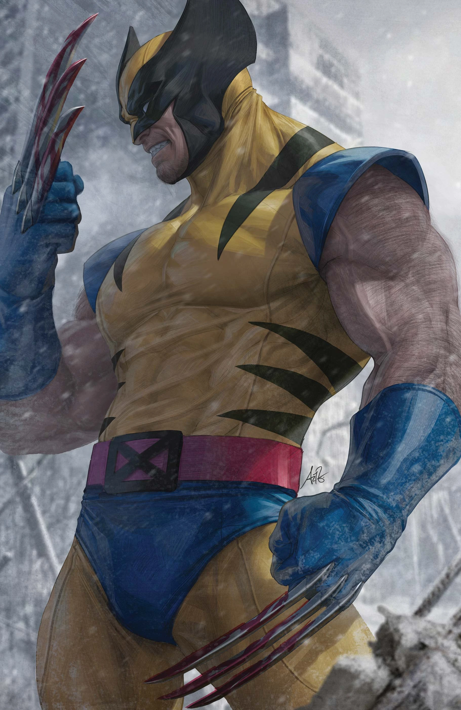
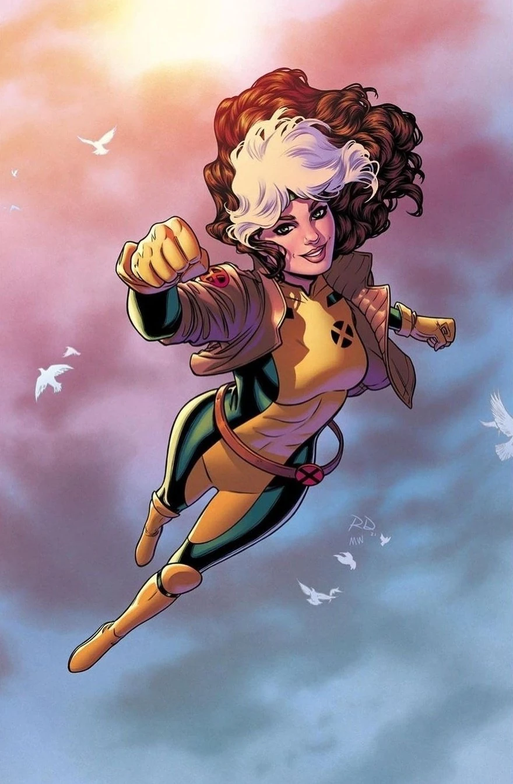
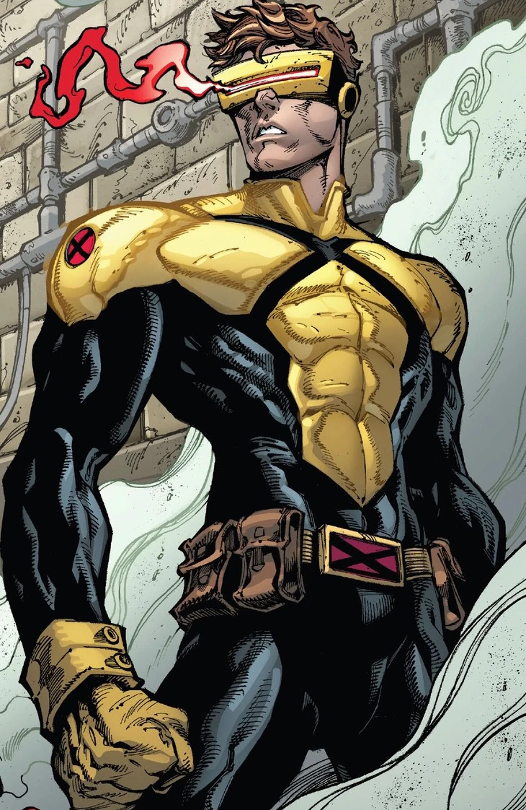
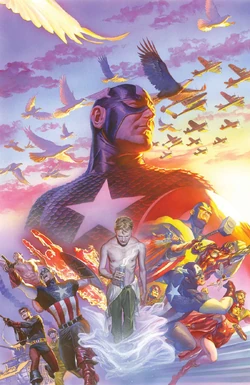
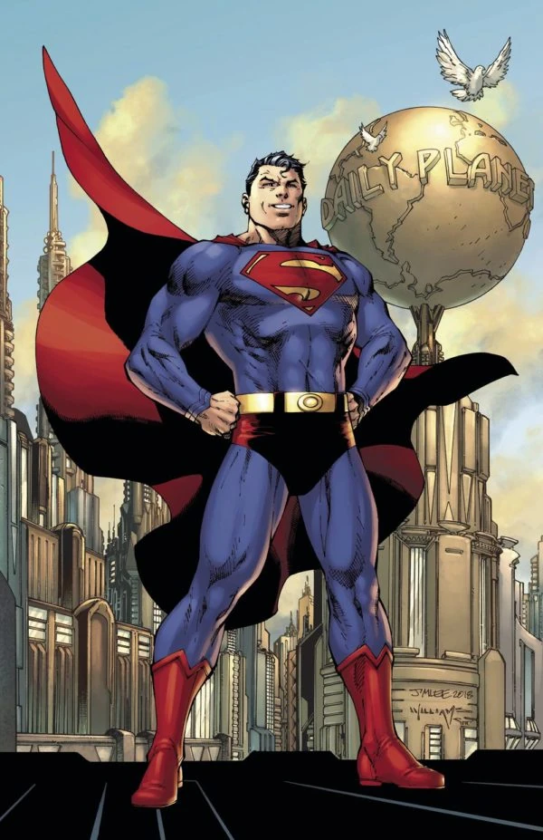
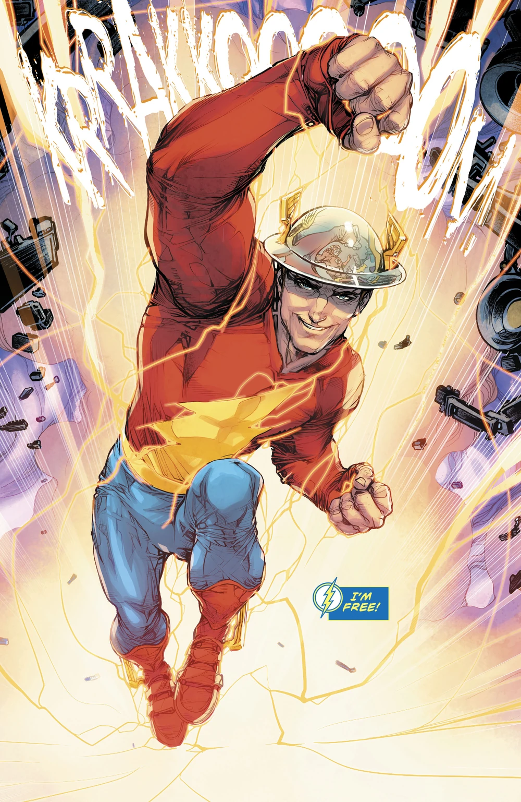

Wolverine
James Howlett
Cursed with a berserker fury, the violent mutant known
as Wolverine has a reputation of both as an outstanding
superhero and as a lethal killer. Born as James Howlett
to a wealthy Canadian family at the end of the 19th
century, he was forced to abandon his family after the
tragic manifestation of his bestial abilities of
accelerated healing factor, keenly enhanced senses and
bone claws in each hand. Adopting the name Logan, he
wandered the world, living a long life filled with
blood, war and betrayal,[89] having vile Sabretooth as
his archenemy,[90] and the Japanese warrior Ogun as his
sensei.[91] Unfortunately, by acting as a lone wolf,
Logan was an unwitting subject of the Weapon X Program
and had his bones coated in indestructible Adamantium,
becoming an even more lethal asset.[92] Rescued and
assisted by Mac and Heather Hudson, he joined Department
H as a Canadian government operative known as the
Wolverine.

Rogue
Anna Marie LeBeau
The mutant known as Rogue has the uncontrollable
ability of absorbing the energy of others through
physical contact, temporarily incorporating their
abilities, powers, memories and even personality with a
touch, a process which wears her victims out.[14] A
runaway,[15] Rogue was found and adopted by mutant
terrorists Mystique and Destiny.[16][17] She had her
abilities traumatically activated when she shared her
first kiss with a boy and put him into a coma.[18] As
part of Mystique's Brotherhood of Evil Mutants Rogue
accidentally learned through Destiny that the
super-heroine Ms. Marvel was destined to bring tragedy
to their life. Deciding to secretly attack Ms. Marvel,
Rogue unexpectedly absorbed her entire persona,
permanently keeping not only her flight and
super-strength powers but also her psyche.[19][14]
Gravely affected by this experience, Rogue had no choice
but to seek help with Mystique's enemy, Professor
Charles Xavier, founder and leader of the X-Men.
Contrary to other members' disapproval, Xavier took
Rogue in as part of the team.

Cyclops
Scott Summers
Scott Summers is a mutant with the ability to fire
destructive optic beams from his eyes.[14] As the first
X-Man Cyclops,[40] he has ascended from super hero field
leader to a mutant revolutionary icon.[41] The firstborn
son of Major Chris Summers,[42] Scott and his brother
Alex witnessed the apparent murder of their parents by
the Shi'ar Emperor D'ken.[43] As an introspective orphan
and in the clutches of the nefarious Mister Sinister,
his mutant abilities first manifested.[44] After
escaping Sinister's orphanage, Summers was rescued by
Professor Xavier, a fellow mutant who ran a school aimed
at helping mutants to control their uncanny
abilities.

Captain America
Steve Rogers
During the dark days of the early 1940s, a covert U.S.
Military experiment turned Steve Rogers into America's
first Super-Soldier, Captain America. Throughout the
war, Cap and his partner, Bucky fought alongside
infantry and with a group of heroes known as the
Invaders. In the closing months of World War II, Captain
America and Bucky were both presumed dead in an
explosion. Decades later, Captain America was found
trapped in ice and revived in the modern world. Captain
America would then later go on to be one of the most
important members of the Avengers as well as a leader of
the team. As a symbol of freedom and patriotism, a
number of men have taken the mantle of Captain America
in Rogers' various absences. Of note are William
Nasland, Jeffrey Mace, Bucky Barnes, and Sam
Wilson.

Superman
Clark Kentt
Superman (real name Clark Kent, born Kal-El) is one of
the last children of Krypton, sent as the dying planet's
last hope to Earth, where he grew to become its kind,
noble protector. Using his flight, enhanced strength,
heat vision, and various other powers, he protects the
planet and the universe from powerful threats, all while
inspiring hope into others. He is also a founding member
of the Justice League, and the father of Jon Kent, the
second Superman.

Batman
Bruce Wayne
Batman is the superhero protector of Gotham City, a
tortured, brooding vigilante dressed as a bat who fights
against evil and strikes fear into the hearts of
criminals everywhere. In his public identity, he is
Bruce Wayne, a billionaire industrialist and notorious
playboy. Although he has no superhuman abilities, he is
one of the world's smartest men and greatest fighters.
His physical prowess, technical ingenuity, and tactical
thinking make him an incredibly dangerous opponent. He
was also a founding member of the Justice League.

The Flash
Jey Garrik
Jason "Jay" Garrick is the first speedster to be called
The Flash, and a founding member of the Justice Society
of America. As a result of Doctor Manhattan's
alterations to the timeline, Jay became trapped in the
Speed Force and forgotten to all,[1] though eventually
the alterations were undone and Jay was restored
alongside the rest of the world's proper history.